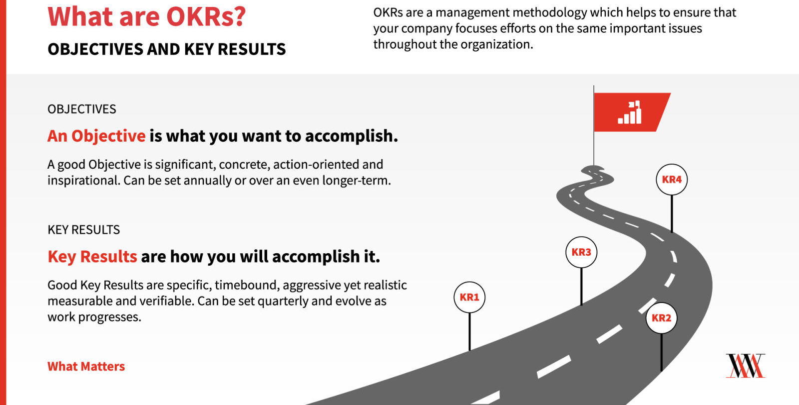
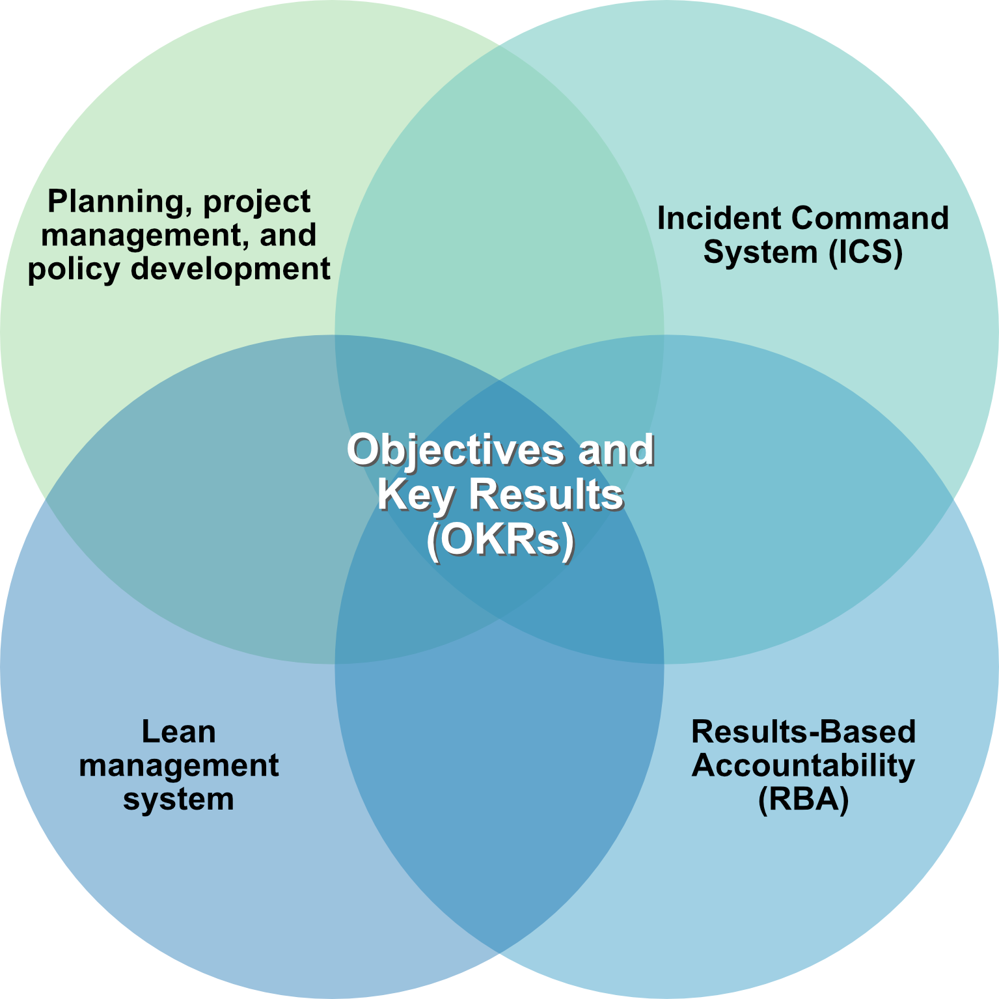
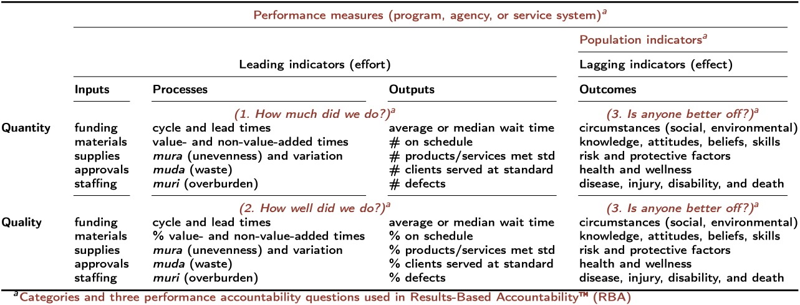

![]()
flowchart RL kr1.1([Key Result 1.1]) --> o1(Objective 1) kr1.2([Key Result 1.2]) --> o1 kr2.1([Key Result 2.1]) --> o2(Objective 2) kr2.2([Key Result 2.2]) --> o2
Note
This is part of the series The CDPH Way—Becoming the best at getting better.
For background, here is an overview slide set and lean reporting templates.
The CDPH Way—“Becoming the Best at Getting Better”
As part of public health accreditation the California Department of Public Health (CDPH) deploys a continuous improvement framework to deliver on strategic priorities. The CDPH directorate (leadership) has established three strategic priorities to drive CDPH’s lean transformation:
- Become a learning, healing, and impactful organization
- Deploy lean with Objectives and Key Results (Figure 1)1
- Become trauma informed and responsive
- Promote equity, antiracism and health equity
- Develop our people
- Ensure core public health competencies
- Support personal professional development
- Tackle key public health challenges
- The Future of Public Health Initiative
- Behavioral health promotion (especially youth)
- Community and Population Health Improvement
- Emergency readiness and pandemic recovery
- Climate action and community resilience
At CDPH, we envision having 4000+ problem solvers focused on incremental and breakthrough continuous improvement and innovation using lean thinking and practice. Lean thinking and practice is “systematically developing people to solve problems and consuming the fewest possible resources while continuously improving processes to provide value to community members and prosperity to society.”2
Every health organization, program, and team should be lean. These six elements make up the CDPH lean operating system:
- Respect for people (staff, community, client, patient, customer)
- Continuous improvement (improvement kata)
- Scientific thinking, problem solving, and innovation (A3 thinking)
- Management by Objectives (goals) and Key Results (measures) (OKRs)
- Being agile, adaptive, and responsive to meet challenges and opportunities
- Elimination of waste and undesired variability in inputs, processes, outputs, and outcomes
These six components are required and if one is missing organizational effectiveness and mission will suffer.
Important
Every health organization, program, and team should be a lean. … These six components are required and if one is missing organizational effectiveness and mission will suffer.
For this blog posting I am highlighting Objectives and Key Results (Figure 1). Before reading further, watch this 4 minute video:

Do not confuse OKRs with Activities!
A very common mistake I see is the confusion of activities (or tasks) with OKRs—they are not the same. We have
- Objectives (goals or subgoals)
- Key Results (measures of progress and success)
- Activities (tasks; project management milestones)
By intention, OKRs focuses on the first two. Obviously, activities are critical and important; that is why project management is essential to completing a project on time, within budget, and with high quality.
Completing a project is not the same as accomplishing your goals—do not confuse them. A good project manager makes these distinctions and incorporates good goal-setting (OKRs) into project management practice.
Here is an acronym to help you remember: OKRA (like the vegetable!).
- O = Objectives (goals—desired future states)
- KR = Key Results (metrics—measures of progress and success)
- A Activities (tasks—project management)
When you are asked to provide OKRs, provide the OKRs and not only a long list of current and completed activities. For example, a project management milestone (“building a bridge”) is not the same as an Objective (“goal of improving commute transportation”) and Key Results (lowering commuting costs, reducing commute times, improving commuting experience, etc.).
Note
Project management milestones are not OKRs unless they are explicitly designed to be OKRs. See next section.
Objectives and Key Results (OKRs) in detail
Goal setting and tracking are at the center of all performance or improvement frameworks (eg, planning, project management, lean, Results-Based Accountability [RBA], Incident Command System [ICS]). Because of its central importance, we are using a best practice for goal setting and tracking called Objectives and Key Results (Figure 1). OKRs is an updated version of “management by objectives” (around since the 1950s) and is used by organizations like Google, the Gates Foundation, and many others.
For your top priorities, answer two questions:
- What do we want to accomplish? (Objectives). Good Objectives are significant, concrete, action-oriented, and inspirational.
- How do we measure progress and success? (Key Results). Good Key Results are specific and time-bound, aggressive yet realistic, and measurable and verifiable.
That’s it! Then, meet at a regular cadence to track progress on Key Results, and adjust activities to achieve your Objectives. To learn more, see https://www.whatmatters.com/get-started.
Key Results are always connected to specific Objectives. Key Results are necessary and sufficient to accomplish the Objective. Objectives are the WHAT and Key Results are the HOW.
OKRs do not replace other frameworks. OKRs is a goal setting best practice, and goal setting is part of all planning, implementation, and improvement frameworks (Figure 2).

Goal-setting is at the core of many frameworks:
- Results-Based Accountability (RBA)
- Incident Command System (ICS)
- Lean management system
- Project management
- Policy development
- Collective Impact
- Planning
OKRs supercharge your ability to set and achieve audacious goals by accelerating your FACTS:
- F \(\rightarrow\) Focus
- A \(\rightarrow\) Alignment
- C \(\rightarrow\) Commitment
- T \(\rightarrow\) Tracking
- S \(\rightarrow\) Stretching
Three Kinds of OKRs
OKRs are a communication tool that describe what success looks like. To reach your Objective, what do you need to accomplish? And how far do you need to stretch your efforts this cycle to get there?
OKRs are one of three types:
- Committed OKR: Though still a stretch, we must achieve 100% in the next cycle.
- Aspirational OKR: A significant stretch in the next cycle; typically only 70% of these KRs will be met.
- Learning OKR: What you want to learn in the next cycle.
What is a good Objective?
A good Objective is
- significant,
- concrete,
- action-oriented,
- inspirational.
It does not have metrics; it is your destination! Here are additional questions to ask:
- Is the Objective a meaningful change?
- Is the Objective an inspiring change?
- Is the Objective an audacious change?
- Is each one specific enough, articulating a clear direction?
- Do they inspire action with verbs and avoid passive language?
- Are they all concise? Or could you say them in a simpler way?
What are good Key Results?
Good Key Results are
- specific and time-bound,
- aggressive yet realistic, and
- measurable and verifiable.
Phrase each of your Key Results as an input, process, output, or outcome.
- Inputs \(\rightarrow\) financial, material, or human resources
- Processes \(\rightarrow\) activities that transform inputs into outputs
- Outputs \(\rightarrow\) delivery of products or services
- Outcomes \(\rightarrow\) change in knowledge, behaviors, skills, conditions, etc.
We have control of inputs, processes, and outputs, but usually only influence on outcomes.
Key Results based on outcomes are more meaningful, but more difficult to measure and track.
Look for leading indicators are predictive and provide early warning of trouble.
Pair quantity KRs with quality KRs
Determine if your KR is a hold, an increment, or a leap
- Hold \(\rightarrow\) Keep getting the same results.
- Increment \(\rightarrow\) Improve what’s working today.
- Leap \(\rightarrow\) Make a big step forward.
The Figure 3 (Table) summarizes Key Results and includes the Results-Based Accountability (RBA) framework. RBA is an epidemiologic framework that distinguishes program versus population results and is commonly used for collective impact approaches.

Important
Objectives and Key Results (OKRs)
For your top priorities, answer two questions:
- What do we want to accomplish? (Objectives). Good Objectives are significant, concrete, action-oriented, and inspirational.
- How do we measure progress and success? (Key Results). Good Key Results are specific and time-bound, aggressive yet realistic, and measurable and verifiable.
That’s it! Then, meet at a regular cadence to track progress on Key Results, and adjust activities to achieve your Objectives.
Examples of OKRs
Send me examples of public health OKRs
Please send examples to tomas.aragon@cdph.ca.gov.
Sports
Objective: Win the Super Bowl for the 2023 season, as measured by
- KR.1: Recruiting franchise quarterback by April, 2023 (input: human resource)
- KR.2: Recruiting highly ranked defensive coordinator by April, 2023 (input: human resource)
- KR.3: Implementing accredited sports psychology program by May, 2023 (process).
- KR.4: Winning the Division title by December 31, 2023 (outcome).
- KR.5: Winning the Conference title by January 30, 2024 (outcome).
- KR.6: Winning the Super Bowl title by February 15, 2024 (outcome).
Personal
Objective: Improve and sustain my physical, mental, and emotional well-being, as measured by
- KR.1: Consume two cups of oatmeal and avoid added sugars (daily)
- KR.2: Get at least 8 hours of sleep (nightly)
- KR.3: Walk or jog 12 miles every weekend (weekly).
- KR.4: Spend every weekend home with family (weekly).
- KR.5: Measure weight (at least weekly) and maintain BMI between 24 and 25 (normal BMI is 18.5-24.9)
Public health
COVID-19 vaccine equity
Strategic COVID-19 vaccine equity statement: “All communities in California enjoy racial, socioeconomic, and geographic equity in vaccine-related community immunity, health outcomes, and socioeconomic impacts.”
There are four Objectives (Key Results not shown, except for Objective 4 below)
- Achieve high and equitable access to COVID-19 vaccines across California, as measured by \(\ldots\)
- Achieve high and equitable acceptance to COVID-19 vaccines across California, as measured by \(\ldots\)
- Achieve high quality and equitable administration of COVID-19 vaccines across California, as measured by \(\ldots\)
- Achieve equitable community immunity against COVID-19 across California, as measured by \(\ldots\)
Objective 4: Achieve equitable community immunity against COVID-19 across California, as measured by
- KR 4.1: Vaccine coverage is >= 80% for persons 50 years or older, stratified by Healthy Places Index, and race/ethnicity by INSERT DATE.
- KR 4.2: COVID-19 case rates are below TARGET, stratified by Healthy Places Index, and race/ethnicity by INSERT DATE.
- KR 4.3: COVID-19 hospitalization rates are below TARGET, stratified by Healthy Places Index, and race/ethnicity by INSERT DATE.
- KR 4.4: COVID-19 death rates are below TARGET, stratified by Healthy Places Index, and race/ethnicity by INSERT DATE.
Substance, Addiction, and Prevention (SAPB) Branch
SAPB strategic Objectives (Key Results are pending)
- Improve CDPH and state agency coordination between primary, secondary, and tertiary prevention efforts, including evidence-based/informed and emerging practices and interventions, as measured by \(\ldots\)
- Improve state and local surveillance, as measured by \(\ldots\)
- Promote protective factors and reduce risk factors to support individual and community resiliency, as measured by \(\ldots\)
- Increase public awareness and education, as measured by \(\ldots\)
- Expand naloxone access, saturation, and education, as measured by \(\ldots\)
- Promote treatment and reduce stigma, as measured by \(\ldots\)
- Promote harm reduction and drug checking services, as measured by \(\ldots\)
More examples from whatmatters.com
For more examples, visit https://www.whatmatters.com/get-examples.